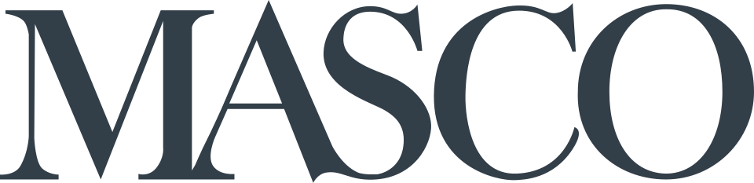

Masco
Masco는 주택 개량 및 신규 주택 건설 시장에 필요한 제품을 제조하는 미국 기업이다. 여러 회사를 거느리며 미국과 세계 각지에서 제조 시설을 운영한다.
최종 업데이트

Masco는 어떤 브랜드인가
Masco는 주택 개량과 신규 주택 건설에 쓰이는 제품을 제조하는 기업이다. 20개가 넘는 회사로 구성된 복합 기업으로, 미국에서 약 60개, 그 밖의 지역에서 20개가 넘는 제조 시설을 운영한다.
기계 가공 자동차 부품 생산에서 출발해 수도용품, 건축 하드웨어, 가구와 캐비닛 등으로 사업을 확대했다. Richard Manoogian의 경영 아래 여러 기업을 인수하며 성장했고 Fortune 500에 진입했다.
1969년부터 뉴욕증권거래소에서 거래한다.
Masco는 어떻게 시작되고 성장했나
Alex Manoogian이 1929년 미국 디트로이트에서 Masco Screw Products Company로 설립했다. 초기에는 디트로이트 자동차 기업에 기계 가공 부품을 공급했으며, 1930년 Hudson Motor Company와 첫 계약을 체결했다.
1936년 디트로이트증권거래소에 상장했고 1961년 회사명을 Masco Corporation으로 변경했다. 1967년 본사를 테일러로 이전했으며, Richard Manoogian의 지휘 아래 인수를 거듭해 대형 지주회사로 성장했다.
Masco의 브랜드 아이덴티티는 무엇인가
자동차용 기계 부품 업체에서 출발해 Delta 수도꼭지를 중심으로 주택 개량과 건설 제품 분야의 복합 제조기업으로 성장한 점이 특징이다.
Masco의 대표 제품과 서비스는 무엇인가
초기 주력 사업은 자동차 기업을 위한 기계 가공 부품 생산이었다. 1952년 Alex Manoogian은 단일 손잡이 방식의 와셔 없는 수도꼭지를 재설계했으며, 이 제품은 이후 Delta로 알려졌다.
회사는 수도꼭지 판매 경로를 배관 도매업체에서 소매점으로 확대해 대중 시장에 진입했다. 이후 건축 하드웨어와 가구 사업을 확장했고 1985년에는 캐비닛 제조를 시작했다.
Masco는 지금 어떤 상태인가
Masco는 20개가 넘는 회사를 포함하며 미국과 세계 여러 지역에서 제조 시설을 운영하는 기업이다. 2010년 기준 세계 매출은 $7.6 billion이고 제조 시설은 약 90개이다.
2014년 8월 기준 최고경영자는 Keith J. Allman이다.
Masco 로고는 어떻게 변해왔나
자주 묻는 질문
Masco는 어느 나라 브랜드인가요?
Masco는 미국의 홈·라이프스타일 브랜드입니다.
Masco는 언제 설립되었나요?
Masco는 1929년 설립되었습니다.
Masco의 브랜드 아이덴티티는 무엇인가요?
자동차용 기계 부품 업체에서 출발해 Delta 수도꼭지를 중심으로 주택 개량과 건설 제품 분야의 복합 제조기업으로 성장한 점이 특징이다.
Masco의 대표 제품은 무엇인가요?
초기 주력 사업은 자동차 기업을 위한 기계 가공 부품 생산이었다.
Masco는 현재 어떤 상태인가요?
Masco는 20개가 넘는 회사를 포함하며 미국과 세계 여러 지역에서 제조 시설을 운영하는 기업이다.
Masco의 창업자는 누구인가요?
Masco의 창업자는 Alex Manoogian입니다(위키데이터 기준).
Masco의 본사는 어디에 있나요?
Masco의 본사는 테일러에 있습니다(위키데이터 기준).
출처와 검증
Masco 관련 참고: 공식 웹사이트 · 위키데이터 Q6782872 · 영어 위키백과. 브랜드명은 한글과 원어를 함께 표기하되 데이터에 없는 표기는 만들지 않습니다. 기원 국가·설립연도는 검수된 정의문에서 확인된 값을 우선하고, 없을 때만 공식 웹사이트 URL이 일치하는 위키데이터 개체의 값을 씁니다. 위키데이터 값은 2026-09-12 기준입니다.